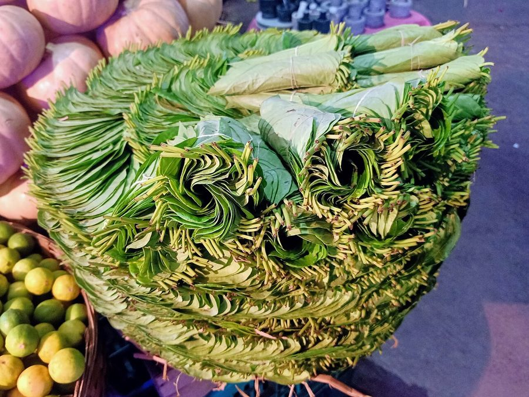

पानBetel Vine
Piper betle · Piperaceae · FLR-0399

- Scientific name वैज्ञानिक नाम
- Piper betle L.
- Family कुल
- Piperaceae
- Hindi हिंदी
- पान
- Local names स्थानीय नाम
- paan, pan, betel vine, betel leaf
- Status here यहाँ की स्थिति
- cultivated
- Movement आवागमन
- Resident, here all year
- Known from कहाँ दर्ज
- No online record yet in Uttar Pradesh; included from published range उत्तर प्रदेश से अभी कोई ऑनलाइन अभिलेख नहीं; प्रकाशित वितरण के आधार पर शामिल
- IUCN IUCN
- not evaluated
- Review समीक्षा
- not yet reviewed
When to look कब देखें
Present all year. साल भर मौजूद।
Uses and possibilities उपयोग और संभावनाएँ
“Traditional medicine” means a documented traditional use, not a claim that it works. Nothing on this page is medical advice.
Drawn from the documented uses in the profile below, where each is labelled traditional, current or a research lead. All uses →
पान / Betel Vine
Piper betle L. — Piperaceae
पान — अवध और पूर्वांचल की सांस्कृतिक पहचान से जुड़ा एक सदाबहार लता पौधा है। इसे बांस और सरकंडे के छायादार छप्परों (बरोजा या भीटा) में बड़ी सावधानी से पाला जाता है। इसके दिल के आकार के चमकदार, सुगंधित पत्ते पारंपरिक बीड़े बनाने और पूजा-अनुष्ठानों में सदियों से उपयोग किए जाते रहे हैं।
Quick Identification त्वरित पहचान
| Feature | Description |
|---|---|
| Habit | Robust, dioecious, semi-woody evergreen climbing vine rooting at swollen nodes |
| Foliage | Alternate, coriaceous, broadly ovate-cordate or obliquely ovate, glossy dark green |
| Venation | Five to seven prominent palmate nerves radiating from the unequal cordate base |
| Stem | Stout, compressed when dry, glabrous, with clinging adventitious aerial roots |
| Inflorescence | Cylindrical, pendulous, densely packed catkin-like spikes; male long, female stout |
| Aroma | Spicy, clove-like, pungent, warm aromatic fragrance released when foliage is bruised |
Field tip: In eastern Uttar Pradesh, betel vine is almost never found in open fields; it is confined to specialized, high-walled, thatched shade conservatories known as barejas. Inside, the climbing vines cling to slender bamboo stakes, displaying lush, glossy, heart-shaped leaves with an unmistakable spicy aroma and unequal leaf bases.
हिंदी:
यह छायादार बरोजों में बांस के सहारे ऊपर चढ़ने वाली एक सदाबहार बेल है।
इसके पत्ते दिल के आकार के, चमकदार गहरे हरे और थोड़े मोटे होते हैं।
पत्तों को तोड़ने पर लौंग और तीखे मसालों जैसी खास खुशबू आती है।
Morphology आकारिकी
Measurement not available in consulted sources. Betel vine is a perennial, semi-woody, dioecious evergreen climbing vine that attaches itself to supports by means of clinging adventitious aerial roots. The primary root system comprises adventitious roots developing from stem nodes beneath moist soil or organic mulches. The stems are stout, trailing or climbing, cylindrical, compressed and grooved when dry, thickened and swollen at the nodes, completely glabrous, pale to dark green, and produce abundant aerial rootlets along internodes.
The leaves are alternate, petiolate, and prominently coriaceous (leathery). The petioles are stout, channelled, glabrous or minutely puberulous when young. The leaf blades are broadly ovate-oblong or obliquely ovate-cordate in outline, with an acute or shortly acuminate apex and an unequal, cordate, or rounded base where one side is distinctly broader than the other. The margins are entire and somewhat undulate. The leaf surfaces are glabrous and shining dark green on the upper surface, paler beneath, bearing five to seven prominent primary nerves that originate from the base and arch toward the apex.
The species is dioecious, bearing unisexual flowers on separate male and female individual vines. The inflorescence is a solitary, leaf-opposed, pendulous, cylindrical catkin-like spike borne on a slender peduncle. The floral bracts are peltate, orbicular, and fleshy.
Individual flowers are minute, achlamydeous (lacking both calyx and corolla), and protected by the peltate bracts. Staminate (male) spikes are slender, elongated, and densely packed; each male flower comprises two short stamens flanking the bract, bearing two-celled, reniform, yellow anthers. Pistillate (female) spikes are stouter, fleshy, and pendulous; each female flower comprises a sessile, unilocular superior ovary immersed in the rachis, surrounded by three to five recurved, papillose stigmas. The fruits are small, globose berries that often become confluent with the fleshy rachis into a cylindrical, succulent, reddish-brown fruiting spike, though flowering and fruiting are rare under commercial cultivation in northern India where clonal leaf harvesting dominates.
हिंदी: यह छायादार बरोजों में बांस के सहारे ऊपर चढ़ने वाली सदाबहार बेल है। पत्ते दिल के आकार के, चमकदार गहरे हरे और असमान आधार वाले होते हैं।
Behaviour & Ecology व्यवहार एवं पारिस्थितिकी
Piper betle is an obligate shade-loving, sciophytic tropical vine indigenous to the humid understory of evergreen tropical rainforests. It lacks drought tolerance and cold resistance, requiring high relative humidity, warm temperatures, and filtered, diffuse sunlight. Under the harsh continental climate of the Gangetic plain, characterized by scorching summer winds (loo) and chilly winter mornings, it cannot survive in open air and is cultivated inside artificial, thatched microclimatic enclosures called barejas.
The plant climbs by producing specialized adventitious clinging roots along its internodes that adhere firmly to bamboo poles, grass stalks, or tree bark. In these humid micro-environments, the glossy, waxy leaf cuticle prevents desiccation while allowing efficient gas exchange under low light intensity.
The vegetative tissues are replete with specialized ethereal oil cells containing aromatic essential oil, including chavicol (Chopra et al. 1956, p. 194). These secondary metabolites endow the leaf with its characteristic pungent, warming bite.
हिंदी: यह घनी छाया और भारी नमी में पनपने वाला पौधा है। तेज धूप और लू से बचाने के लिए इसे सरकंडे के छप्परों में पाला जाता है।
Cultivation Calendar खेती का कैलेंडर
Duthie & Fuller (1893, Part III, pp. 51–53), quoting the Gazetteer's account of the Azamgarh district, record that pan is cultivated by Barais in enclosed sheds (barej) of sufficient height to work within. Cuttings with three or more joints are planted in spring (March) in furrows, covered with grass and kept damp until shoots appear; the crop is regularly irrigated until the rains and manured towards the end of the rains with pounded oil-cake. Plants are trained upon thin supports (sarai or kamaia). Vines planted in March yield leaves fit for plucking in June or July, yielding most leaf in the autumn, and the plantation endures for several seasons.
हिंदी: डथी एवं फुलर (1893, भाग 3, पृ. 51-53) के अनुसार, बरई जाति द्वारा बरोजों में मार्च में तीन या अधिक गांठों वाली कलमें लगाई जाती हैं। इन्हें घास से ढककर सींचा जाता है और सरई या कमैया के सहारे चढ़ाया जाता है। जून-जुलाई से तुड़ाई शुरू होकर शरद ऋतु में सबसे अधिक पत्ते मिलते हैं।
Life Cycle / Phenology जीवन चक्र एवं ऋतुचक्र
Betel vine is maintained perpetually in a vegetative juvenile state through rigorous clonal propagation and frequent pruning. Rooted cuttings begin producing active adventitious roots within a week or two after planting in moist bareja beds. New lateral shoots emerge from nodal buds, rapidly elongating into vertical climbing vines.
Vegetative leaf production is most vigorous during the warm, humid monsoon months from July to September. Growth slows considerably during the dry summer and cold winter periods, when bareja walls are reinforced with extra thatch to protect the vines from frost and cold drafts.
Sexual reproduction is virtually absent in commercial northern Indian plantations, as male and female clones are rarely grown together and floral induction is suppressed by continuous leaf harvesting and dense canopy shade. Individual vines remain productive for several years before the bareja is renovated or replanted on rotated ground.
हिंदी: लताओं के टुकड़ों से नई जड़ें फूटती हैं। बरसात में बेल बहुत तेजी से बढ़ती है। व्यावसायिक खेती में फूल नहीं आने दिए जाते।
Associated Species / Interactions सहजीवी प्रजातियाँ एवं पारिस्थितिक संबंध
The enclosed, humid microclimate of the traditional bareja creates a unique artificial ecosystem within the rural landscape. The moist beds and dense climbing foliage harbor a specialized assemblage of shade- and moisture-loving invertebrates, including earthworms, springtails, and predatory rove beetles.
In rural homestead plantings, betel vine is occasionally grown in sheltered courtyards or home gardens, trained on supports or shaded trellises.
हिंदी: बरोजे के नम वातावरण में केंचुए और मित्र कीट पनपते हैं।
Pests and Diseases कीट और रोग
The warm, humid, enclosed atmosphere of barejas predisposes betel vine to destructive fungal and bacterial pathogens. Foot rot and leaf rot are the most serious diseases during the monsoon, manifesting as water-soaked lesions at the stem collar that turn black, causing rapid vine wilting. Anthracnose causes circular brown necrotic lesions with dark rings on the leaves. Bacterial leaf spot creates angular spots with yellow halos.
Among insect pests, whiteflies and plant bugs suck sap from tender apical leaves, causing leaf crinkling, stunting, and necrotic spotting. Nematodes attack subterranean feeder roots, impairing water uptake. Management depends heavily on preventive cultural sanitation, using disease-free cuttings, ensuring drainage, and applying oil cakes.
हिंदी: जड़ गलन और पत्तों का सड़न रोग बरसात में भारी नुकसान पहुंचाता है। उचित जल निकास और खली के प्रयोग से बचाव होता है।
Agricultural / Human Relevance कृषि एवं मानव प्रासंगिकता
Betel vine is deeply woven into the social fabric, hospitality, and cultural history of Awadh and India. The prepared betel leaf (paan) is an essential symbol of honor, hospitality, and auspiciousness, offered in religious ceremonies, wedding rituals, and hospitality. Duthie & Fuller (1893, Part III, p. 51) describe the leaf chewed with lime, catechu and betel nut, with aromatics added such as cardamoms, cloves and camphor. Chopra et al. (1956, p. 194) record that the leaf is aromatic, carminative, and stimulant, its essential oil containing chavicol. This is a record of published traditional use, not medical advice. Habitual chewing of betel leaf in preparations containing areca nut (Areca catechu) and tobacco is classified as carcinogenic to humans by the International Agency for Research on Cancer (IARC 2004), substantially increasing the risk of oral cancers and oral submucous fibrosis.
हिंदी: पान अवध के आदर-सत्कार और संस्कृति का अभिन्न हिस्सा है। हालांकि तंबाकू और सुपारी के साथ चबाना कैंसर का कारण बनता है।
Expected Locally स्थानीय रूप से अपेक्षित
Not a field record. Written from published accounts for eastern Uttar Pradesh. No confirmed local sighting yet — if you have seen it, that is what the atlas needs.
अभी तक स्थानीय पुष्टि नहीं। यह विवरण प्रकाशित स्रोतों से है, किसी अवलोकन से नहीं।
Look inside traditional thatched shade-house conservatories (barejas) in specialized villages across eastern Uttar Pradesh. It should be looked for near village water bodies and at urban and rural betel leaf wholesale haats where fresh leaves are traded daily.
GBIF holds no published record from the Awadh–Purvanchal plain yet; crops are seldom recorded there.
A first record would be a photograph of the flowering or fruiting plant with place and date, sent through the About page.
Distribution वितरण
Piper betle is cultivated throughout South Asia, Southeast Asia, southern China, and parts of the tropical Pacific. The species originated in the humid tropical lowlands of Southeast Asia, spreading across the Indian subcontinent in early antiquity through ancient maritime trade networks. Duthie & Fuller (1893, Part III, p. 51) give its Sanskrit name as tambula. Duthie & Fuller (1893, Part III, p. 51) give its cultivation in these Provinces as restricted to the warmer and damper eastern and southern districts, a variety grown in Bundelkhand being in great request.
हिंदी: यह मूल रूप से दक्षिण-पूर्व एशिया का पौधा है, जो प्राचीन काल से भारत और उत्तर प्रदेश के खास इलाकों में संरक्षित रूप से उगाया जाता है।
Research Questions शोध प्रश्न
- What are the primary microclimatic parameters (humidity, temperature, light transmission) required to optimize leaf quality and reduce fungal rot in Awadh barejas? / अवध के बरोजों में पान के पत्तों की चमक बढ़ाने और फफूंद रोकने के लिए कितनी नमी और तापमान जरूरी है?
- How effective are local bio-formulations (such as fermented neem cake and Trichoderma amendments) in suppressing Phytophthora foot rot in betel vine beds? / पान के बरोजों में जड़ गलन (फाइटोफ्थोरा) बीमारी को रोकने के लिए नीम की खली और ट्राइकोडर्मा कितने असरदार हैं?
- What are the comparative essential oil yields among traditional regional betel vine varieties (such as Maghai, Desi, and Meetha)? / देशी, मगही और मीठा पान की किस्मों में सुगंधित तेल की मात्रा में क्या फर्क है?
- What architectural modifications to traditional thatch barejas can improve resilience against extreme summer heatwaves without escalating construction costs?
- What are the seasonal population fluctuations of whiteflies and mites inside enclosed conservatory structures?
हिंदी: बरोजे के तापमान प्रबंधन और जैविक फफूंदनाशकों के उपयोग पर और वैज्ञानिक अनुसंधान आवश्यक है।
Similar Species मिलती-जुलती प्रजातियाँ
Betel vine (Piper betle) shares the climbing habit and cordate leaf shape of other cultivated and wild piperaceous species. Long pepper (Piper longum, FLR-0418) is a creeping or climbing perennial herb, but it is smaller, its lower leaves are cordate with deeply rounded basal lobes, its upper leaves are oblong-elliptic and subsessile with prominent sheathing bases, and it produces erect, narrow, spike-like fruits harvested as the spice pippali. Black pepper (Piper nigrum) is a vigorous, woody high-climbing liana with thicker, leathery, ovate-elliptic leaves with rounded or acute bases (rarely cordate), producing hanging spikes of round green berries that turn red and dry into black peppercorns. Winged yam (Dioscorea alata) or trellised bottle gourd is a twining climber with heart-shaped leaves, but has quadrangular winged stems and large subterranean tubers, lacking the spicy aromatic odor and aerial adventitious clinging rootlets of Piper betle.
| Feature / Trait | Betel Vine (Piper betle) | Long Pepper (Piper longum, FLR-0418) | Black Pepper (Piper nigrum) |
|---|---|---|---|
| Growth Habit | Semi-woody evergreen climbing vine | Creeping and climbing subshrubby herb | Heavy, woody, high-climbing liana |
| Leaf Outline | Broadly ovate-cordate, unequal base | Lower cordate, upper oblong-lanceolate | Ovate-elliptic, acute or rounded base |
| Stem Character | Stout, swollen nodes, clinging roots | Trailing, slender, nodes rooting | Woody, robust, climbing high into canopy |
| Primary Product | Fresh aromatic foliage for chewing | Dried cylindrical infructescences (pippali) | Dried spherical peppercorns |
| Habitat | Strictly inside thatched bareja conservatories | Shaded forest floor and herbal beds | Humid tropical agroforests on living trees |
Field rule: Betel vine (Piper betle) is distinguished by its semi-woody climbing stems with clinging aerial roots, unequal cordate leaf bases, spicy clove scent, and confinement to thatched barejas, whereas bottle gourd has hairy herbaceous stems.
हिंदी: पिप्पली के पत्ते छोटे और फल लंबे होते हैं, जबकि पान के पत्ते बड़े, चिकने और दिल के आकार के होते हैं।
Taxonomy & Classification वर्गीकरण एवं नामकरण
Piper betle was named and described by Carl Linnaeus in 1753 in Species Plantarum. The genus Piper is the type genus of the family Piperaceae, belonging to the basal angiosperm order Piperales. Across India, hundreds of horticultural cultivars or landraces exist, recognized primarily by leaf size, thickness, pungency, and tenderness (such as Maghai, Banarasi, Desi, and Sanchi). In historical botanical treatises, including J. D. Hooker's Flora of British India and J. F. Duthie's Flora of the Upper Gangetic Plain, the species is catalogued under Piperaceae as an extensively cultivated plant grown in the hotter and damper regions of the subcontinent.
Original description. Piper betle was named and described by Carl Linnaeus in 1753 in Species Plantarum (vol. 1, p. 28).
Subspecies. Numerous traditional clonal landraces exist in northern India (such as Desi, Maghai, Banarasi, and Meetha), distinguished by leaf pungency and texture.
Family and order placement. The genus Piper is the type genus of the family Piperaceae, placed in the order Piperales.
IUCN status rationale. Piper betle is an ancient cultivated domesticate widely distributed across tropical Asia and is Not Evaluated (NE) on the IUCN Red List.
हिंदी: कार्ल लिनिअस ने 1753 में इसका वर्णन किया था। यह पाइपरेसी (काली मिर्च-पान कुल) का सदस्य है।
Photo Gallery फोटो गैलरी
No photos yet. Images documenting this species from eastern Uttar Pradesh will be added following verification.
References संदर्भ
- Linnaeus, C. (1753). Species Plantarum, vol. 1, p. 28. Laurentii Salvii, Holmiae.
- Duthie, J. F. & Fuller, J. B. (1893). Field and Garden Crops of the North-Western Provinces and Oudh. Part 3. Roorkee: Thomason Civil Engineering College Press, p. 51 (as Piper Betle).
- Hooker, J. D. (1890). Piperaceae. In J. D. Hooker (ed.), The Flora of British India, vol. 5, p. 85. L. Reeve & Co., London.
- Duthie, J. F. (1915). Flora of the Upper Gangetic Plain and of the Adjacent Siwalik and Sub-Himalayan Tracts, vol. 3, part 1, p. 64. Office of the Superintendent of Government Printing, Calcutta.
- IARC Working Group (2004). Betel-quid and Areca-nut Chewing and Some Areca-nut-derived Nitrosamines. IARC Monographs on the Evaluation of Carcinogenic Risks to Humans, vol. 85. Lyon: International Agency for Research on Cancer.
- GBIF Occurrence Data — Piper betle, India (2025).
- Chopra, R. N., Nayar, S. L. & Chopra, I. C. (1956). Glossary of Indian Medicinal Plants. New Delhi: Council of Scientific & Industrial Research, p. 194.
Source file: species/flora/crops/betel_vine.md